本章目录
- A.1 What is PyTorch?
- A.1.1 The three core components of PyTorch
- A.1.2 Defining deep learning
- A.1.3 Installing PyTorch
- Python version
- PyTorch and Torch
- PyTorch on Apple Silicon
- Exercise A.1
- Exercise A.2
- A.2 Understanding tensors
- PyTorch with a NumPy-like API
- A.2.1 Scalars, vectors, matrices, and tensors
- A.2.2 Tensor data types
- A.2.3 Common PyTorch tensor operations
- A.3 Seeing models as computation graphs
- A.4 Automatic differentiation made easy
- A.5 Implementing multilayer neural networks
- A.6 Setting up efficient data loaders
- A.7 A typical training loop
- Exercise A.3
appendix A Introduction to PyTorch#
This appendix is designed to equip you with the necessary skills and knowledge to put deep learning into practice and implement large language models (LLMs) from scratch. PyTorch, a popular Python-based deep learning library, will be our primary tool for this book. I will guide you through setting up a deep learning workspace armed with PyTorch and GPU support.
Then you’ll learn about the essential concept of tensors and their usage in PyTorch. We will also delve into PyTorch’s automatic differentiation engine, a feature that enables us to conveniently and efficiently use backpropagation, which is a crucial aspect of neural network training.
This appendix is meant as a primer for those new to deep learning in PyTorch. While it explains PyTorch from the ground up, it’s not meant to be an exhaustive coverage of the PyTorch library. Instead, we’ll focus on the PyTorch fundamentals we will use to implement LLMs. If you are already familiar with deep learning, you may skip this appendix and directly move on to chapter 2.
A.1 What is PyTorch?#
PyTorch (https://pytorch.org/) is an open source Python-based deep learning library. According to Papers With Code (https://paperswithcode.com/trends), a platform that tracks and analyzes research papers, PyTorch has been the most widely used deep learning library for research since 2019 by a wide margin. And, according to the Kaggle Data Science and Machine Learning Survey 2022 (https://www.kaggle .com/c/kaggle-survey-2022), the number of respondents using PyTorch is approximately 40%, which grows every year.
One of the reasons PyTorch is so popular is its user-friendly interface and efficiency. Despite its accessibility, it doesn’t compromise on flexibility, allowing advanced users to tweak lower-level aspects of their models for customization and
251
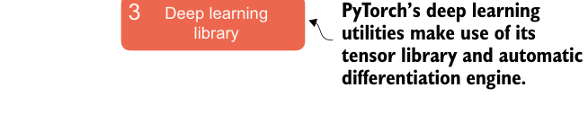
optimization. In short, for many practitioners and researchers, PyTorch offers just the right balance between usability and features.
A.1.1 The three core components of PyTorch#
PyTorch is a relatively comprehensive library, and one way to approach it is to focus on its three broad components, summarized in figure A.1.
2 Automatic
3
Figure A.1 PyTorch’s three main components include a tensor library as a fundamental building block for computing, automatic differentiation for model optimization, and deep learning utility functions, making it easier to implement and train deep neural network models.
First, PyTorch is a tensor library that extends the concept of the array-oriented programming library NumPy with the additional feature that accelerates computation on GPUs, thus providing a seamless switch between CPUs and GPUs. Second, PyTorch is an automatic differentiation engine, also known as autograd, that enables the automatic computation of gradients for tensor operations, simplifying backpropagation and model optimization. Finally, PyTorch is a deep learning library. It offers modular, flexible, and efficient building blocks, including pretrained models, loss functions, and optimizers, for designing and training a wide range of deep learning models, catering to both researchers and developers.
A.1.2 Defining deep learning#
In the news, LLMs are often referred to as AI models. However, LLMs are also a type of deep neural network, and PyTorch is a deep learning library. Sound confusing? Let’s take a brief moment and summarize the relationship between these terms before we proceed.
AI is fundamentally about creating computer systems capable of performing tasks that usually require human intelligence. These tasks include understanding natural language, recognizing patterns, and making decisions. (Despite significant progress, AI is still far from achieving this level of general intelligence.)
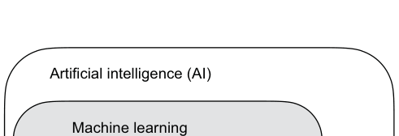
Machine learning represents a subfield of AI, as illustrated in figure A.2, that focuses on developing and improving learning algorithms. The key idea behind machine learning is to enable computers to learn from data and make predictions or decisions without being explicitly programmed to perform the task. This involves developing algorithms that can identify patterns, learn from historical data, and improve their performance over time with more data and feedback.
Machine learning has been integral in the evolution of AI, powering many of the advancements we see today, including LLMs. Machine learning is also behind technologies like recommendation systems used by online retailers and streaming services, email spam filtering, voice recognition in virtual assistants, and even self-driving cars. The introduction and advancement of machine learning have significantly enhanced AI’s capabilities, enabling it to move beyond strict rule-based systems and adapt to new inputs or changing environments.
Deep learning is a subcategory of machine learning that focuses on the training and application of deep neural networks. These deep neural networks were originally inspired by how the human brain works, particularly the interconnection between many neurons. The “deep” in deep learning refers to the multiple hidden layers of artificial neurons or nodes that allow them to model complex, nonlinear relationships in the data. Unlike traditional machine learning techniques that excel at simple pattern recognition, deep learning is particularly good at handling unstructured data like images, audio, or text, so it is particularly well suited for LLMs.
The typical predictive modeling workflow (also referred to as supervised learning) in machine learning and deep learning is summarized in figure A.3.
Using a learning algorithm, a model is trained on a training dataset consisting of examples and corresponding labels. In the case of an email spam classifier, for example, the training dataset consists of emails and their “spam” and “not spam” labels that a human identified. Then the trained model can be used on new observations (i.e., new emails) to predict their unknown label (“spam” or “not spam”). Of course, we also want to add a model evaluation between the training and inference stages to
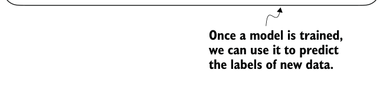
TRAINING
INFERENCE
ensure that the model satisfies our performance criteria before using it in a real-world application.
If we train LLMs to classify texts, the workflow for training and using LLMs is similar to that depicted in figure A.3. If we are interested in training LLMs to generate texts, which is our main focus, figure A.3 still applies. In this case, the labels during pretraining can be derived from the text itself (the next-word prediction task introduced in chapter 1). The LLM will generate entirely new text (instead of predicting labels), given an input prompt during inference.
A.1.3 Installing PyTorch#
PyTorch can be installed just like any other Python library or package. However, since PyTorch is a comprehensive library featuring CPU- and GPU-compatible codes, the installation may require additional explanation.
Python version #
Many scientific computing libraries do not immediately support the newest version of
Python. Therefore, when installing PyTorch, it’s advisable to use a version of Python
that is one or two releases older. For instance, if the latest version of Python is 3.13,
using Python 3.11 or 3.12 is recommended.
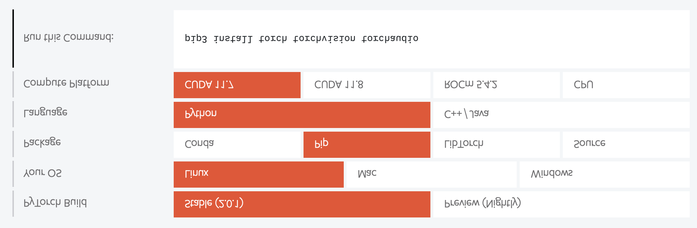
For instance, there are two versions of PyTorch: a leaner version that only supports CPU computing and a full version that supports both CPU and GPU computing. If your machine has a CUDA-compatible GPU that can be used for deep learning (ideally, an NVIDIA T4, RTX 2080 Ti, or newer), I recommend installing the GPU version. Regardless, the default command for installing PyTorch in a code terminal is:
pip install torchSuppose your computer supports a CUDA-compatible GPU. In that case, it will automatically install the PyTorch version that supports GPU acceleration via CUDA, assuming the Python environment you’re working on has the necessary dependencies (like pip) installed.
To explicitly install the CUDA-compatible version of PyTorch, it’s often better to specify the CUDA you want PyTorch to be compatible with. PyTorch’s official website (https://pytorch.org) provides the commands to install PyTorch with CUDA support for different operating systems. Figure A.4 shows a command that will also install PyTorch, as well as the torchvision and torchaudio libraries, which are optional for this book.
I use PyTorch 2.4.0 for the examples, so I recommend that you use the following command to install the exact version to guarantee compatibility with this book:
pip install torch==2.4.0However, as mentioned earlier, given your operating system, the installation command might differ slightly from the one shown here. Thus, I recommend that you visit https://pytorch.org and use the installation menu (see figure A.4) to select the installation command for your operating system. Remember to replace torch with torch==2.4.0 in the command.
To check the version of PyTorch, execute the following code in PyTorch:
import torch
torch.__version__This prints
'2.4.0'PyTorch and Torch #
The Python library is named PyTorch primarily because it’s a continuation of the Torch
library but adapted for Python (hence, “PyTorch”). “Torch” acknowledges the library’s
roots in Torch, a scientific computing framework with wide support for machine learn-
ing algorithms, which was initially created using the Lua programming language.
If you are looking for additional recommendations and instructions for setting up your Python environment or installing the other libraries used in this book, visit the supplementary GitHub repository of this book at https://github.com/rasbt/ LLMs-from-scratch.
After installing PyTorch, you can check whether your installation recognizes your built-in NVIDIA GPU by running the following code in Python:
import torch
torch.cuda.is_available()This returns
TrueIf the command returns True, you are all set. If the command returns False, your computer may not have a compatible GPU, or PyTorch does not recognize it. While GPUs are not required for the initial chapters in this book, which are focused on implementing LLMs for educational purposes, they can significantly speed up deep learning–related computations.
| notebook–like environment is Google Colab (https://colab.research.google.com),which provides time-limited access to GPUs as of this writing. Using the Runtimemenu, it is possible to select a GPU, as shown in the screenshot in figure A.5. | |
| Access this menu by clicking Changeruntime type in the Runtime tab. | |
| Select GPU instead of TPU or CPU | |
| If an A100 GPU is not available,it’s ok to choose a different GPU. |
If you don’t have access to a GPU, there are several cloud computing providers
Figure A.5 Select a GPU device for Google Colab under the Runtime/Change Runtime Type menu.
PyTorch on Apple Silicon #
If you have an Apple Mac with an Apple Silicon chip (like the M1, M2, M3, or newer
models), you can use its capabilities to accelerate PyTorch code execution. To use
your Apple Silicon chip for PyTorch, you first need to install PyTorch as you normally
would. Then, to check whether your Mac supports PyTorch acceleration with its Apple
Silicon chip, you can run a simple code snippet in Python:
print(torch.backends.mps.is_available())If it returns True, it means that your Mac has an Apple Silicon chip that can be used
to accelerate PyTorch code.
Exercise A.1#
Install and set up PyTorch on your computer
Exercise A.2#
Run the supplementary code at https://mng.bz/o05v that checks whether your envi-
ronment is set up correctly.
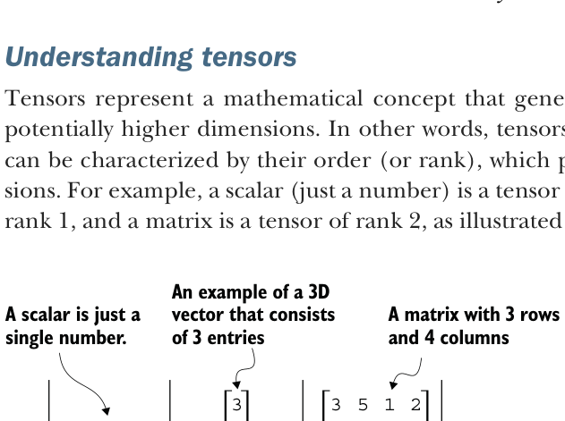
A.2 Understanding tensors#
Tensors represent a mathematical concept that generalizes vectors and matrices to potentially higher dimensions. In other words, tensors are mathematical objects that can be characterized by their order (or rank), which provides the number of dimensions. For example, a scalar (just a number) is a tensor of rank 0, a vector is a tensor of rank 1, and a matrix is a tensor of rank 2, as illustrated in figure A.6.
2
1
1 7 2 3Figure A.6 Tensors with different
3
3 3 4 9ranks. Here 0D corresponds to rank 0, 1D to rank 1, and 2D to rank 2. A three-dimensional vector, which consists of three elements, is still a rank 1 tensor.
From a computational perspective, tensors serve as data containers. For instance, they hold multidimensional data, where each dimension represents a different feature. Tensor libraries like PyTorch can create, manipulate, and compute with these arrays efficiently. In this context, a tensor library functions as an array library.
PyTorch tensors are similar to NumPy arrays but have several additional features that are important for deep learning. For example, PyTorch adds an automatic differentiation engine, simplifying computing gradients (see section A.4). PyTorch tensors also support GPU computations to speed up deep neural network training (see section A.8).
PyTorch with a NumPy-like API #
PyTorch adopts most of the NumPy array API and syntax for its tensor operations. If
you are new to NumPy, you can get a brief overview of the most relevant concepts via
my article “Scientific Computing in Python: Introduction to NumPy and Matplotlib” at
A.2.1 Scalars, vectors, matrices, and tensors#
As mentioned earlier, PyTorch tensors are data containers for array-like structures. A scalar is a zero-dimensional tensor (for instance, just a number), a vector is a onedimensional tensor, and a matrix is a two-dimensional tensor. There is no specific term for higher-dimensional tensors, so we typically refer to a three-dimensional tensor as just a 3D tensor, and so forth. We can create objects of PyTorch’s Tensor class using the torch.tensor function as shown in the following listing.
Listing A.1Creating PyTorch tensors
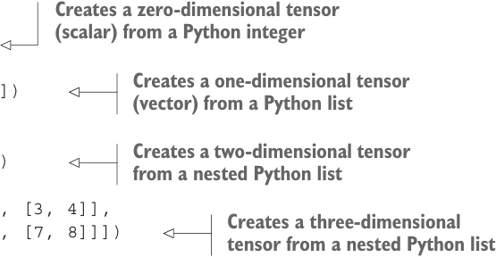
import torch代码旁注 4 条
- Creates a zero-dimensional tensor (scalar) from a Python integer
- Creates a one-dimensional tensor (vector) from a Python list
- Creates a two-dimensional tensor from a nested Python list
- Creates a three-dimensional tensor from a nested Python list
tensor0d = torch.tensor(1)
tensor1d = torch.tensor([1, 2, 3])
tensor2d = torch.tensor([[1, 2],
[3, 4]])
tensor3d = torch.tensor([[[1, 2], [3, 4]],
[[5, 6], [7, 8]]])A.2.2 Tensor data types#
PyTorch adopts the default 64-bit integer data type from Python. We can access the data type of a tensor via the .dtype attribute of a tensor:
tensor1d = torch.tensor([1, 2, 3])
print(tensor1d.dtype)This prints
torch.int64If we create tensors from Python floats, PyTorch creates tensors with a 32-bit precision by default:
floatvec = torch.tensor([1.0, 2.0, 3.0])
print(floatvec.dtype)The output is
torch.float32This choice is primarily due to the balance between precision and computational efficiency. A 32-bit floating-point number offers sufficient precision for most deep learning tasks while consuming less memory and computational resources than a 64-bit floatingpoint number. Moreover, GPU architectures are optimized for 32-bit computations, and using this data type can significantly speed up model training and inference.
Moreover, it is possible to change the precision using a tensor’s .to method. The following code demonstrates this by changing a 64-bit integer tensor into a 32-bit float tensor:
floatvec = tensor1d.to(torch.float32)
print(floatvec.dtype)This returns
torch.float32For more information about different tensor data types available in PyTorch, check the official documentation at https://pytorch.org/docs/stable/tensors.html.
A.2.3 Common PyTorch tensor operations#
Comprehensive coverage of all the different PyTorch tensor operations and commands is outside the scope of this book. However, I will briefly describe relevant operations as we introduce them throughout the book.
We have already introduced the torch.tensor() function to create new tensors:
tensor2d = torch.tensor([[1, 2, 3],
[4, 5, 6]])
print(tensor2d)This prints
tensor([[1, 2, 3],
[4, 5, 6]])In addition, the .shape attribute allows us to access the shape of a tensor:
print(tensor2d.shape)The output is
torch.Size([2, 3])As you can see, .shape returns [2, 3], meaning the tensor has two rows and three columns. To reshape the tensor into a 3 × 2 tensor, we can use the .reshape method:
print(tensor2d.reshape(3, 2))This prints
tensor([[1, 2],
[3, 4],
[5, 6]])However, note that the more common command for reshaping tensors in PyTorch is
.view():
print(tensor2d.view(3, 2))The output is
tensor([[1, 2],
[3, 4],
[5, 6]])Similar to .reshape and .view, in several cases, PyTorch offers multiple syntax options for executing the same computation. PyTorch initially followed the original Lua Torch syntax convention but then, by popular request, added syntax to make it similar to NumPy. (The subtle difference between .view() and .reshape() in PyTorch lies in their handling of memory layout: .view() requires the original data to be contiguous and will fail if it isn’t, whereas .reshape() will work regardless, copying the data if necessary to ensure the desired shape.)
Next, we can use .T to transpose a tensor, which means flipping it across its diagonal. Note that this is similar to reshaping a tensor, as you can see based on the following result:
print(tensor2d.T)The output is
tensor([[1, 4],
[2, 5],
[3, 6]])Lastly, the common way to multiply two matrices in PyTorch is the .matmul method:
print(tensor2d.matmul(tensor2d.T))The output is
tensor([[14, 32],
[32, 77]])However, we can also adopt the @ operator, which accomplishes the same thing more compactly:
print(tensor2d @ tensor2d.T)This prints
tensor([[14, 32],
[32, 77]])As mentioned earlier, I introduce additional operations when needed. For readers who’d like to browse through all the different tensor operations available in PyTorch (we won’t need most of these), I recommend checking out the official documentation at https://pytorch.org/docs/stable/tensors.html.
A.3 Seeing models as computation graphs#
Now let’s look at PyTorch’s automatic differentiation engine, also known as autograd. PyTorch’s autograd system provides functions to compute gradients in dynamic computational graphs automatically.
A computational graph is a directed graph that allows us to express and visualize mathematical expressions. In the context of deep learning, a computation graph lays
Listing A.2
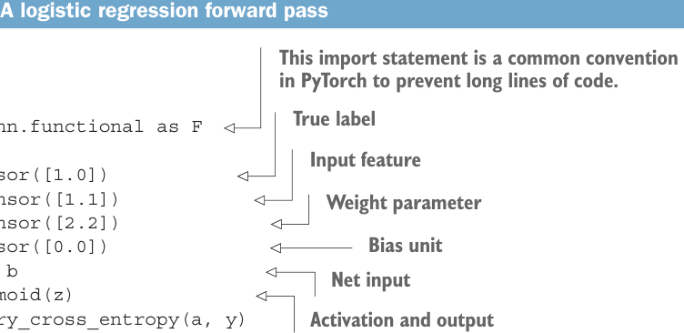
A logistic regression forward pass
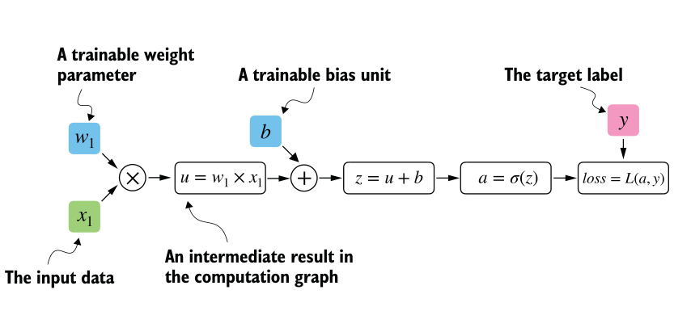
out the sequence of calculations needed to compute the output of a neural network— we will need this to compute the required gradients for backpropagation, the main training algorithm for neural networks.
Let’s look at a concrete example to illustrate the concept of a computation graph. The code in the following listing implements the forward pass (prediction step) of a simple logistic regression classifier, which can be seen as a single-layer neural network. It returns a score between 0 and 1, which is compared to the true class label (0 or 1) when computing the loss.
代码旁注 6 条
- This import statement is a common convention in PyTorch to prevent long lines of code.
- Input feature
- Weight parameter
- Bias unit
- Net input
- Activation and output
import torch.nn.functional as F True label
y = torch.tensor([1.0])
x1 = torch.tensor([1.1])
w1 = torch.tensor([2.2])
b = torch.tensor([0.0])
z = x1 * w1 + b
a = torch.sigmoid(z)
loss = F.binary_cross_entropy(a, y)If not all components in the preceding code make sense to you, don’t worry. The point of this example is not to implement a logistic regression classifier but rather to illustrate how we can think of a sequence of computations as a computation graph, as shown in figure A.7.
In fact, PyTorch builds such a computation graph in the background, and we can use this to calculate gradients of a loss function with respect to the model parameters (here w1 and b) to train the model.
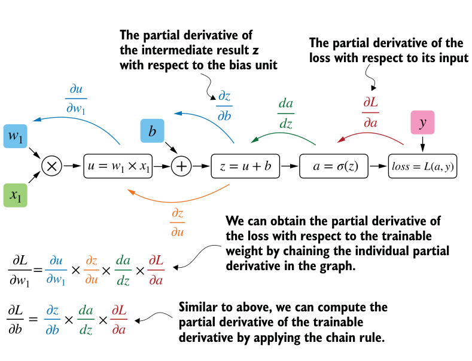
A.4 Automatic differentiation made easy#
If we carry out computations in PyTorch, it will build a computational graph internally by default if one of its terminal nodes has the requires_grad attribute set to True. This is useful if we want to compute gradients. Gradients are required when training neural networks via the popular backpropagation algorithm, which can be considered an implementation of the chain rule from calculus for neural networks, illustrated in figure A.8.
PARTIAL DERIVATIVES AND GRADIENTS
Figure A.8 shows partial derivatives, which measure the rate at which a function changes with respect to one of its variables. A gradient is a vector containing all of the partial derivatives of a multivariate function, a function with more than one variable as input.
If you are not familiar with or don’t remember the partial derivatives, gradients, or chain rule from calculus, don’t worry. On a high level, all you need to know for this book is that the chain rule is a way to compute gradients of a loss function given the model’s parameters in a computation graph. This provides the information needed to update each parameter to minimize the loss function, which serves as a proxy for measuring the
Listing A.3Computing gradients via autograd
model’s performance using a method such as gradient descent. We will revisit the computational implementation of this training loop in PyTorch in section A.7.
How is this all related to the automatic differentiation (autograd) engine, the second component of the PyTorch library mentioned earlier? PyTorch’s autograd engine constructs a computational graph in the background by tracking every operation performed on tensors. Then, calling the grad function, we can compute the gradient of the loss concerning the model parameter w1, as shown in the following listing.
代码旁注 1 条
- By default, PyTorch destroys the computation graph after calculating the gradients to free memory. However, since we will reuse this computation graph shortly, we set retain_graph=True so that it stays in memory.
import torch.nn.functional as F
from torch.autograd import grad
y = torch.tensor([1.0])
x1 = torch.tensor([1.1])
w1 = torch.tensor([2.2], requires_grad=True)
b = torch.tensor([0.0], requires_grad=True)
z = x1 * w1 + b
a = torch.sigmoid(z)
loss = F.binary_cross_entropy(a, y)
grad_L_w1 = grad(loss, w1, retain_graph=True)
grad_L_b = grad(loss, b, retain_graph=True)The resulting values of the loss given the model’s parameters are
print(grad_L_w1)
print(grad_L_b)This prints
(tensor([-0.0898]),)
(tensor([-0.0817]),)Here, we have been using the grad function manually, which can be useful for experimentation, debugging, and demonstrating concepts. But, in practice, PyTorch provides even more high-level tools to automate this process. For instance, we can call .backward on the loss, and PyTorch will compute the gradients of all the leaf nodes in the graph, which will be stored via the tensors’ .grad attributes:
loss.backward()
print(w1.grad)
print(b.grad)The outputs are
(tensor([-0.0898]),)
(tensor([-0.0817]),)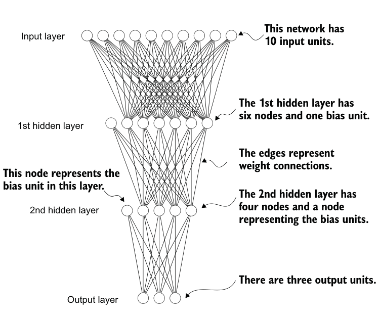
I’ve provided you with a lot of information, and you may be overwhelmed by the calculus concepts, but don’t worry. While this calculus jargon is a means to explain PyTorch’s autograd component, all you need to take away is that PyTorch takes care of the calculus for us via the .backward method—we won’t need to compute any derivatives or gradients by hand.
A.5 Implementing multilayer neural networks#
Next, we focus on PyTorch as a library for implementing deep neural networks. To provide a concrete example, let’s look at a multilayer perceptron, a fully connected neural network, as illustrated in figure A.9.
When implementing a neural network in PyTorch, we can subclass the torch.nn.Module class to define our own custom network architecture. This Module base class provides a lot of functionality, making it easier to build and train models. For instance, it allows us to encapsulate layers and operations and keep track of the model’s parameters.
Within this subclass, we define the network layers in the __init__ constructor and specify how the layers interact in the forward method. The forward method describes how the input data passes through the network and comes together as a computation graph. In contrast, the backward method, which we typically do not need to implement ourselves, is used during training to compute gradients of the loss function given the model parameters (see section A.7). The code in the following listing implements a
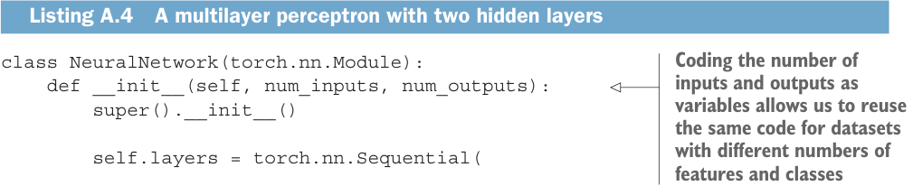
Listing A.4A multilayer perceptron with two hidden layers
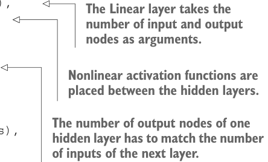
classic multilayer perceptron with two hidden layers to illustrate a typical usage of the
Module class.
代码旁注 1 条
- Coding the number of inputs and outputs as variables allows us to reuse the same code for datasets with different numbers of features and classes
class NeuralNetwork(torch.nn.Module):
def __init__(self, num_inputs, num_outputs):
super().__init__()
self.layers = torch.nn.Sequential(
# 1st hidden layer
torch.nn.Linear(num_inputs, 30),代码旁注 5 条
- The Linear layer takes the number of input and output
- nodes as arguments.
- Nonlinear activation functions are placed between the hidden layers.
- The number of output nodes of one hidden layer has to match the number of inputs of the next layer.
- The outputs of the last layer are called logits.
torch.nn.ReLU(),
# 2nd hidden layer
torch.nn.Linear(30, 20),
torch.nn.ReLU(),
# output layer
torch.nn.Linear(20, num_outputs),
)
def forward(self, x):
logits = self.layers(x)
return logitsWe can then instantiate a new neural network object as follows:
model = NeuralNetwork(50, 3)Before using this new model object, we can call print on the model to see a summary of its structure:
print(model)This prints
NeuralNetwork(
(layers): Sequential(
(0): Linear(in_features=50, out_features=30, bias=True)
(1): ReLU()
(2): Linear(in_features=30, out_features=20, bias=True)
(3): ReLU()
(4): Linear(in_features=20, out_features=3, bias=True)
)
)Note that we use the Sequential class when we implement the NeuralNetwork class. Sequential is not required, but it can make our life easier if we have a series of layers we want to execute in a specific order, as is the case here. This way, after instantiating self.layers = Sequential(...) in the __init__ constructor, we just have to call the self.layers instead of calling each layer individually in the NeuralNetwork’s
forward method.
Next, let’s check the total number of trainable parameters of this model:
num_params = sum(p.numel() for p in model.parameters() if p.requires_grad)
print("Total number of trainable model parameters:", num_params)This prints
Total number of trainable model parameters: 2213Each parameter for which requires_grad=True counts as a trainable parameter and will be updated during training (see section A.7).
In the case of our neural network model with the preceding two hidden layers, these trainable parameters are contained in the torch.nn.Linear layers. A Linear layer multiplies the inputs with a weight matrix and adds a bias vector. This is sometimes referred to as a feedforward or fully connected layer.
Based on the print(model) call we executed here, we can see that the first Linear layer is at index position 0 in the layers attribute. We can access the corresponding weight parameter matrix as follows:
print(model.layers[0].weight)This prints
Parameter containing:
tensor([[ 0.1174, -0.1350, -0.1227, ..., 0.0275, -0.0520, -0.0192],
[-0.0169, 0.1265, 0.0255, ..., -0.1247, 0.1191, -0.0698],
[-0.0973, -0.0974, -0.0739, ..., -0.0068, -0.0892, 0.1070],
...,
[-0.0681, 0.1058, -0.0315, ..., -0.1081, -0.0290, -0.1374],
[-0.0159, 0.0587, -0.0916, ..., -0.1153, 0.0700, 0.0770],
[-0.1019, 0.1345, -0.0176, ..., 0.0114, -0.0559, -0.0088]],
requires_grad=True)Since this large matrix is not shown in its entirety, let’s use the .shape attribute to show its dimensions:
print(model.layers[0].weight.shape)The result is
torch.Size([30, 50])(Similarly, you could access the bias vector via model.layers[0].bias.)
The weight matrix here is a 30 × 50 matrix, and we can see that requires_grad is set to True, which means its entries are trainable—this is the default setting for weights and biases in torch.nn.Linear.
If you execute the preceding code on your computer, the numbers in the weight matrix will likely differ from those shown. The model weights are initialized with small random numbers, which differ each time we instantiate the network. In deep learning, initializing model weights with small random numbers is desired to break symmetry during training. Otherwise, the nodes would be performing the same operations and updates during backpropagation, which would not allow the network to learn complex mappings from inputs to outputs.
However, while we want to keep using small random numbers as initial values for our layer weights, we can make the random number initialization reproducible by seeding PyTorch’s random number generator via manual_seed:
torch.manual_seed(123)
model = NeuralNetwork(50, 3)
print(model.layers[0].weight)The result is
Parameter containing:
tensor([[-0.0577, 0.0047, -0.0702, ..., 0.0222, 0.1260, 0.0865],
[ 0.0502, 0.0307, 0.0333, ..., 0.0951, 0.1134, -0.0297],
[ 0.1077, -0.1108, 0.0122, ..., 0.0108, -0.1049, -0.1063],
...,
[-0.0787, 0.1259, 0.0803, ..., 0.1218, 0.1303, -0.1351],
[ 0.1359, 0.0175, -0.0673, ..., 0.0674, 0.0676, 0.1058],
[ 0.0790, 0.1343, -0.0293, ..., 0.0344, -0.0971, -0.0509]],
requires_grad=True)Now that we have spent some time inspecting the NeuralNetwork instance, let’s briefly see how it’s used via the forward pass:
torch.manual_seed(123)
X = torch.rand((1, 50))
out = model(X)
print(out)The result is
tensor([[-0.1262, 0.1080, -0.1792]], grad_fn=<AddmmBackward0>)In the preceding code, we generated a single random training example X as a toy input (note that our network expects 50-dimensional feature vectors) and fed it to the model, returning three scores. When we call model(x), it will automatically execute the forward pass of the model.
The forward pass refers to calculating output tensors from input tensors. This involves passing the input data through all the neural network layers, starting from the input layer, through hidden layers, and finally to the output layer.
These three numbers returned here correspond to a score assigned to each of the three output nodes. Notice that the output tensor also includes a grad_fn value.
Here, grad_fn=<AddmmBackward0> represents the last-used function to compute a variable in the computational graph. In particular, grad_fn=<AddmmBackward0> means that the tensor we are inspecting was created via a matrix multiplication and addition operation. PyTorch will use this information when it computes gradients during back-
propagation. The <AddmmBackward0> part of grad_fn=<AddmmBackward0> specifies the operation performed. In this case, it is an Addmm operation. Addmm stands for matrix multiplication (mm) followed by an addition (Add).
If we just want to use a network without training or backpropagation—for example, if we use it for prediction after training—constructing this computational graph for backpropagation can be wasteful as it performs unnecessary computations and consumes additional memory. So, when we use a model for inference (for instance, making predictions) rather than training, the best practice is to use the torch.no_grad() context manager. This tells PyTorch that it doesn’t need to keep track of the gradients, which can result in significant savings in memory and computation:
with torch.no_grad():
out = model(X)
print(out)The result is
tensor([[-0.1262, 0.1080, -0.1792]])In PyTorch, it’s common practice to code models such that they return the outputs of the last layer (logits) without passing them to a nonlinear activation function. That’s because PyTorch’s commonly used loss functions combine the softmax (or sigmoid for binary classification) operation with the negative log-likelihood loss in a single class. The reason for this is numerical efficiency and stability. So, if we want to compute class-membership probabilities for our predictions, we have to call the softmax function explicitly:
with torch.no_grad():
out = torch.softmax(model(X), dim=1)
print(out)This prints
tensor([[0.3113, 0.3934, 0.2952]]))The values can now be interpreted as class-membership probabilities that sum up to 1. The values are roughly equal for this random input, which is expected for a randomly initialized model without training.
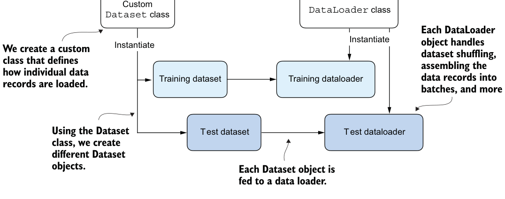
Listing A.5Creating a small toy dataset
A.6 Setting up efficient data loaders#
Before we can train our model, we have to briefly discuss creating efficient data loaders in PyTorch, which we will iterate over during training. The overall idea behind data loading in PyTorch is illustrated in figure A.10.
DatasetCustom class
DataLoader classPyTorch implements a Dataset and a DataLoader class. The Dataset class is used to Figure A.10 instantiate objects that define how each data record is loaded. The DataLoader handles how the data is shuffled and assembled into batches.
Following figure A.10, we will implement a custom Dataset class, which we will use to create a training and a test dataset that we’ll then use to create the data loaders. Let’s start by creating a simple toy dataset of five training examples with two features each. Accompanying the training examples, we also create a tensor containing the corresponding class labels: three examples belong to class 0, and two examples belong to class 1. In addition, we make a test set consisting of two entries. The code to create this dataset is shown in the following listing.
X_train = torch.tensor([
[-1.2, 3.1],
[-0.9, 2.9],
[-0.5, 2.6],
[2.3, -1.1],
[2.7, -1.5]
])
y_train = torch.tensor([0, 0, 0, 1, 1])
X_test = torch.tensor([
[-0.8, 2.8],
[2.6, -1.6],
])
y_test = torch.tensor([0, 1])Defining a custom Dataset class Listing A.6
Next, we create a custom dataset class, ToyDataset, by subclassing from PyTorch’s Dataset parent class, as shown in the following listing.
代码旁注 2 条
- Instructions for retrieving exactly one data record and the corresponding label
- Instructions for returning the total length of the dataset
from torch.utils.data import Dataset
class ToyDataset(Dataset):
def __init__(self, X, y):
self.features = X
self.labels = y
def __getitem__(self, index):
one_x = self.features[index]
one_y = self.labels[index]
return one_x, one_y
def __len__(self):
return self.labels.shape[0]
train_ds = ToyDataset(X_train, y_train)test_ds = ToyDataset(X_test, y_test)The purpose of this custom ToyDataset class is to instantiate a PyTorch DataLoader. But before we get to this step, let’s briefly go over the general structure of the
ToyDataset code.
In PyTorch, the three main components of a custom Dataset class are the __init__ constructor, the __getitem__ method, and the __len__ method (see listing A.6). In the __init__ method, we set up attributes that we can access later in the __getitem__ and __len__ methods. These could be file paths, file objects, database connectors, and so on. Since we created a tensor dataset that sits in memory, we simply assign X and y to these attributes, which are placeholders for our tensor objects.
In the __getitem__ method, we define instructions for returning exactly one item from the dataset via an index. This refers to the features and the class label corresponding to a single training example or test instance. (The data loader will provide this index, which we will cover shortly.)
Finally, the __len__ method contains instructions for retrieving the length of the dataset. Here, we use the .shape attribute of a tensor to return the number of rows in the feature array. In the case of the training dataset, we have five rows, which we can double-check:
print(len(train_ds))Listing A.7Instantiating data loaders
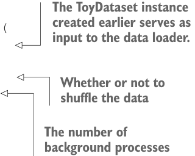
The result is
5
Now that we’ve defined a PyTorch Dataset class we can use for our toy dataset, we can use PyTorch’s DataLoader class to sample from it, as shown in the following listing.
from torch.utils.data import DataLoader
torch.manual_seed(123)代码旁注 4 条
- The ToyDataset instance created earlier serves as input to the data loader.
- Whether or not to shuffle the data
- The number of background processes
- It is not necessary to shuffle a test dataset.
train_loader = DataLoader(
dataset=train_ds,
batch_size=2,
shuffle=True,
num_workers=0
)
test_loader = DataLoader(
dataset=test_ds,
batch_size=2,
shuffle=False,
num_workers=0
)After instantiating the training data loader, we can iterate over it. The iteration over the test_loader works similarly but is omitted for brevity:
for idx, (x, y) in enumerate(train_loader):
print(f"Batch {idx+1}:", x, y)The result is
Batch 1: tensor([[-1.2000, 3.1000],
[-0.5000, 2.6000]]) tensor([0, 0])
Batch 2: tensor([[ 2.3000, -1.1000],
[-0.9000, 2.9000]]) tensor([1, 0])
Batch 3: tensor([[ 2.7000, -1.5000]]) tensor([1])As we can see based on the preceding output, the train_loader iterates over the training dataset, visiting each training example exactly once. This is known as a training epoch. Since we seeded the random number generator using torch.manual_seed(123) here, you should get the exact same shuffling order of training examples. However, if you iterate over the dataset a second time, you will see that the shuffling order will change. This is desired to prevent deep neural networks from getting caught in repetitive update cycles during training.
We specified a batch size of 2 here, but the third batch only contains a single example. That’s because we have five training examples, and 5 is not evenly divisible by 2.
Listing A.8A training loader that drops the last batch
In practice, having a substantially smaller batch as the last batch in a training epoch can disturb the convergence during training. To prevent this, set drop_last=True, which will drop the last batch in each epoch, as shown in the following listing.
train_loader = DataLoader(
dataset=train_ds,
batch_size=2,
shuffle=True,
num_workers=0,
drop_last=True
)Now, iterating over the training loader, we can see that the last batch is omitted:
for idx, (x, y) in enumerate(train_loader):
print(f"Batch {idx+1}:", x, y)The result is
Batch 1: tensor([[-0.9000, 2.9000],
[ 2.3000, -1.1000]]) tensor([0, 1])
Batch 2: tensor([[ 2.7000, -1.5000],
[-0.5000, 2.6000]]) tensor([1, 0])Lastly, let’s discuss the setting num_workers=0 in the DataLoader. This parameter in PyTorch’s DataLoader function is crucial for parallelizing data loading and preprocessing. When num_workers is set to 0, the data loading will be done in the main process and not in separate worker processes. This might seem unproblematic, but it can lead to significant slowdowns during model training when we train larger networks on a GPU. Instead of focusing solely on the processing of the deep learning model, the CPU must also take time to load and preprocess the data. As a result, the GPU can sit idle while waiting for the CPU to finish these tasks. In contrast, when num_workers is set to a number greater than 0, multiple worker processes are launched to load data in parallel, freeing the main process to focus on training your model and better utilizing your system’s resources (figure A.11).
However, if we are working with very small datasets, setting num_workers to 1 or larger may not be necessary since the total training time takes only fractions of a second anyway. So, if you are working with tiny datasets or interactive environments such as Jupyter notebooks, increasing num_workers may not provide any noticeable speedup. It may, in fact, lead to some problems. One potential problem is the overhead of spinning up multiple worker processes, which could take longer than the actual data loading when your dataset is small.
Furthermore, for Jupyter notebooks, setting num_workers to greater than 0 can sometimes lead to problems related to the sharing of resources between different processes, resulting in errors or notebook crashes. Therefore, it’s essential to understand
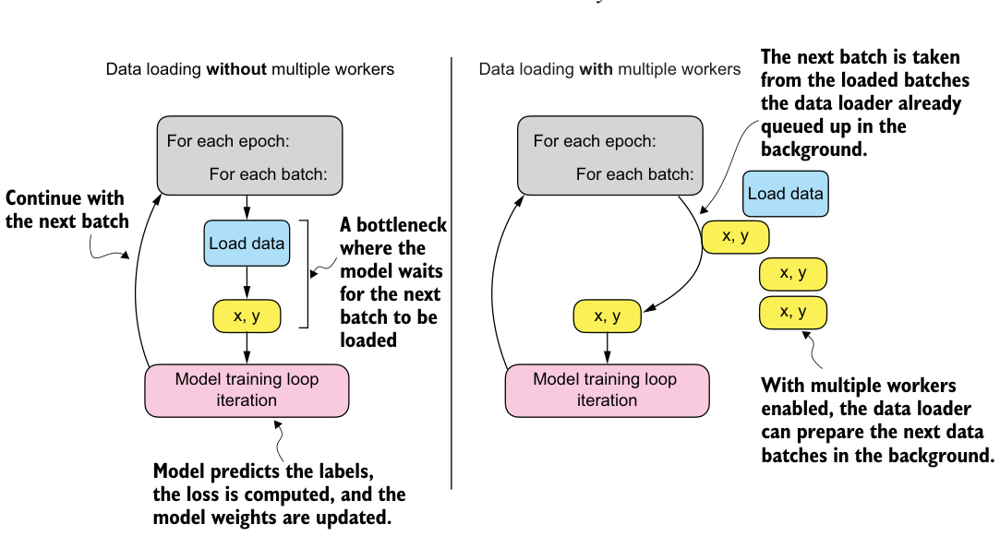
Listing A.9Neural network training in PyTorch
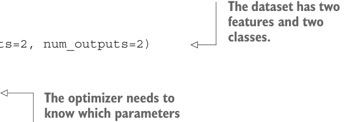
the tradeoff and make a calculated decision on setting the num_workers parameter. When used correctly, it can be a beneficial tool but should be adapted to your specific dataset size and computational environment for optimal results.
In my experience, setting num_workers=4 usually leads to optimal performance on many real-world datasets, but optimal settings depend on your hardware and the code used for loading a training example defined in the Dataset class.
A.7 A typical training loop#
Let’s now train a neural network on the toy dataset. The following listing shows the training code.
import torch.nn.functional as F代码旁注 2 条
- The dataset has two features and two classes.
- The optimizer needs to know which parameters
torch.manual_seed(123)model = NeuralNetwork(num_inputs=2, num_outputs=2)
optimizer = torch.optim.SGD(
model.parameters(), lr=0.5
)
num_epochs = 3for epoch in range(num_epochs): to optimize.
model.train()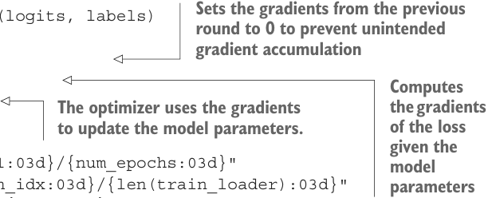
for batch_idx, (features, labels) in enumerate(train_loader):
logits = model(features)
代码旁注 4 条
- Sets the gradients from the previous round to 0 to prevent unintended gradient accumulation
- Computes the gradients
- The optimizer uses the gradients of the loss
- to update the model parameters. given the model parameters
loss = F.cross_entropy(logits, labels)
optimizer.zero_grad()
loss.backward()
optimizer.step()
### LOGGING
print(f"Epoch: {epoch+1:03d}/{num_epochs:03d}"
f" | Batch {batch_idx:03d}/{len(train_loader):03d}"
f" | Train Loss: {loss:.2f}")
model.eval()
# Insert optional model evaluation codeRunning this code yields the following outputs:
Epoch: 001/003 | Batch 000/002 | Train Loss: 0.75
Epoch: 001/003 | Batch 001/002 | Train Loss: 0.65
Epoch: 002/003 | Batch 000/002 | Train Loss: 0.44
Epoch: 002/003 | Batch 001/002 | Trainl Loss: 0.13
Epoch: 003/003 | Batch 000/002 | Train Loss: 0.03
Epoch: 003/003 | Batch 001/002 | Train Loss: 0.00As we can see, the loss reaches 0 after three epochs, a sign that the model converged on the training set. Here, we initialize a model with two inputs and two outputs because our toy dataset has two input features and two class labels to predict. We used a stochastic gradient descent (SGD) optimizer with a learning rate (lr) of 0.5. The learning rate is a hyperparameter, meaning it’s a tunable setting that we must experiment with based on observing the loss. Ideally, we want to choose a learning rate such that the loss converges after a certain number of epochs—the number of epochs is another hyperparameter to choose.
Exercise A.3#
How many parameters does the neural network introduced in listing A.9 have?
In practice, we often use a third dataset, a so-called validation dataset, to find the optimal hyperparameter settings. A validation dataset is similar to a test set. However, while we only want to use a test set precisely once to avoid biasing the evaluation, we usually use the validation set multiple times to tweak the model settings.
We also introduced new settings called model.train() and model.eval(). As these names imply, these settings are used to put the model into a training and an evaluation mode. This is necessary for components that behave differently during training and inference, such as dropout or batch normalization layers. Since we don’t have dropout or other components in our NeuralNetwork class that are affected by these settings, using model.train() and model.eval() is redundant in our preceding code. However, it’s best practice to include them anyway to avoid unexpected behaviors when we change the model architecture or reuse the code to train a different model.
As discussed earlier, we pass the logits directly into the cross_entropy loss function, which will apply the softmax function internally for efficiency and numerical stability reasons. Then, calling loss.backward() will calculate the gradients in the computation graph that PyTorch constructed in the background. The optimizer.step() method will use the gradients to update the model parameters to minimize the loss. In the case of the SGD optimizer, this means multiplying the gradients with the learning rate and adding the scaled negative gradient to the parameters.
After we have trained the model, we can use it to make predictions:
model.eval()
with torch.no_grad():
outputs = model(X_train)
print(outputs)The results are
tensor([[ 2.8569, -4.1618],
[ 2.5382, -3.7548],
[ 2.0944, -3.1820],
[-1.4814, 1.4816],
[-1.7176, 1.7342]])To obtain the class membership probabilities, we can then use PyTorch’s softmax function:
torch.set_printoptions(sci_mode=False)
probas = torch.softmax(outputs, dim=1)
print(probas)This outputs
tensor([[ 0.9991, 0.0009],
[ 0.9982, 0.0018],
[ 0.9949, 0.0051],
[ 0.0491, 0.9509],
[ 0.0307, 0.9693]])Let’s consider the first row in the preceding code output. Here, the first value (column) means that the training example has a 99.91% probability of belonging to class 0 and a 0.09% probability of belonging to class 1. (The set_printoptions call is used here to make the outputs more legible.)
We can convert these values into class label predictions using PyTorch’s argmax function, which returns the index position of the highest value in each row if we set dim=1 (setting dim=0 would return the highest value in each column instead):
predictions = torch.argmax(probas, dim=1)
print(predictions)This prints
tensor([0, 0, 0, 1, 1])Note that it is unnecessary to compute softmax probabilities to obtain the class labels. We could also apply the argmax function to the logits (outputs) directly:
predictions = torch.argmax(outputs, dim=1)
print(predictions)The output is
tensor([0, 0, 0, 1, 1])
Here, we computed the predicted labels for the training dataset. Since the training dataset is relatively small, we could compare it to the true training labels by eye and see that the model is 100% correct. We can double-check this using the == comparison operator:
predictions == y_trainThe results are
tensor([True, True, True, True, True])Using torch.sum, we can count the number of correct predictions:
torch.sum(predictions == y_train)
The output is
5Since the dataset consists of five training examples, we have five out of five predictions that are correct, which has 5/5 × 100% = 100% prediction accuracy.
To generalize the computation of the prediction accuracy, let’s implement a compute_accuracy function, as shown in the following listing.
由 pdf2html2.py 从 bllm2.pdf 转换。插图为原书矢量图按区域渲染的截图，代码块带语法高亮，连字符断词已按全书词表还原。